Mel Kerber
Communications Expert
As the communications expert, I developed presentations and enhanced our written communication. I developed reports and led discussions over language used in interviews, user-facing documents, and internal contracts.
Jai Sawkar
Project Manager
Jai served as our project manager and kept the rest of the team on time. He scheduled both internal meetings and meetings with the teaching staff. He ensured all deliverables were turned in on time and met our expectations for quality.
Lily Huang
Designer
Lily led the design of our internal workflow and enhanced our communication from all sides. She rapidly developed insights and expressed important critique while facilitating important aspects of the research.
Jessica Lim
Designer
Jessica used her design talents to enhance the visual aspects of our presentations and bring a unique perspective to all of our assignments. She iterated rapidly on the idea of our solution consistently produced strong work.
Executive Summary
Research
My team performed extensive research within the problem space, utilizing a variety of different methods that allowed us to fully flesh out our perspective. We began with contextual interviews of four unconventional artists across the globe: one graffiti artist, one performance artist, one busker, and one dancer. These interviews prompted us to begin thinking about potential avenues for audiences to better connect with unconventional artists. Since many of our artists specified that they use Instagram to promote their work, we performed multiple think aloud studies using Instagram. For these user tests, we asked potential audience members to complete tasks focused around engagement. Our usability findings from these tests formed the basis of our initial solution iterations, which then expanded into storyboards. We revisited our audience user base and asked new users to consider our storyboarded solutions. Armed with this intensive research and feedback, we began to formulate the basics of our solution.
Findings
The primary finding from our research was that while unconventional artists want and need to be connected to their communities, current technology does not allow for a stable relationship. The artists we interviewed emphasized the importance of being connected to the culture of their community in order to create appropriate and timely art. Most artists try to use Instagram to reach their community, but our user testing revealed that communicating with artists on Instagram is clunky at best and impossible at worst. Instagram is optimized for media sharing but not as much for interaction; thus, our solution must fulfill the interaction aspect. However, since Instagram is already allowing artists to share photos and videos, we decided to focus our solution as something that integrates with Instagram instead of having to recreate a key function of the app. User feedback encouraged this concept, as many noted they would not be interested in downloading a new app to access suggested features, but would definitely use this information if it was provided within a pre-existing app. Our solution is based on these sentiments from both artists and users in order to fully encapsulate the problem space.
Recommendations
Our recommended solution focused on expanding existing social media websites to better enhance civic engagement from the side of both the artist and the audience. Evidence from our research clearly indicated that while users were interested in connecting more with unconventional artists in their areas, they were unlikely to seek out this solution on their own. Thus, integrating a solution within an already commonly used social media platform puts the power in the user’s hands and makes the entire process simple and streamlined. In order for local unconventional artists to continue making art that captures the spirit of their community, they must be able to hear from their community easily and quickly. Thus, our solution prioritizes communication and engagement; an online improvement that will no doubt enhance the livability of communities across the nation.
Problem Statement
How does unconventional public art impact city livability?
A focus on city livability is imperative in our problem space; some people might perceive graffiti and busking as something which damages the reputation of their city, while others might claim it is these kinds of art which truly bring their community to life.
How can a community support unconventional artists?
Artists who are not receiving conventional funding from the city struggle to fund their art. We want to understand how they can lean on their community for both monetary and emotional support.
How might we remove barriers to the public to allow for better growth of knowledge of an artist’s process?
For many, unconventional art is a mystery. We focused on removing the barrier in both directions; the audience should be able to gather knowledge from the artist's process.
Methods
Contextual Interviews
As a team, we reached out to unconventional artists across the globe and performed virtual contextual interviews. Although we were hindered by the pandemic, this also allowed us to talk to a variety of different artists in different communities; thus, we gathered a rich tapestry of experiences and insights.
User Think Alouds
We each conducted a classic think-aloud study with a different target user. We tested the popular social media platform Instagram in order to encourage a focus on visual media. Multiple unconventional artists we interviewed mentioned that they promoted their art primarily on Instagram, and thus it stood out as a strong starting point for our study. Our users completed six tasks focused around finding new art and discovering artists, as well as exploring how to reach out and contact artists
Storyboards
After using Crazy 8s and Walk the Wall to rapidly develop ideas, we each crafted three storyboard. Each storyboard focused on a potential aspect of the solution while also raising the stakes from the last iteration, resulting in a variety of both safe and out-there suggestions. We then re-tested our work with out audience to isolate the best concepts and applications.
Evidence
During our artist interviews, it became clear that unconventional artists did not separate themselves from more conventional artists on the sole basis of medium or funding. Instead, they prided themselves on their ability to create discussion and drive change. One of the artists we interviewed specified that he felt most public art served only as an aesthetic, not an actual statement or even as a valuable addition to the community. The importance of art representing the cultural zeitgeist was emphasized over and over again; in fact, many artists seemed to wrap that up in their definition of art itself.
"Art needs to make a statement and invite discussion."
Interestingly, users echoed this sentiment of connecting during our think aloud study. We collected eight usability finding templates, and many focused around users wanting to reach out to artists but being unable to do so based on Instagram's design. Users also mentioned that they appreciated being able to easily search and chunk content using hashtags, allowing them to only find the art that was relatable to them. Furthermore, the location services offered on Instagram enhanced their searching process.
"Art represents now."
We explored everything from a tipping system to an AR/VR experience in our storyboards in order to get the broadest amount of feedback from our users. We learned that our participants had a vested interest in learning more about the process behind art, from the initial brainstorming process to the final creation or performance. Users wanted that window into the art world, and a chance to speak to artists in a casual, friendly manner.
Insights
Allowing for users to contribute to the value of a platform promotes civic engagement
When users can contribute to the solution themselves, they create a valuable sense of community that easily transferrers into the offline artistic world.
Unconventionality is defined by society and thus the definition is constantly evolving
What is unconventional art now may not be unconventional in a few years. The solution we create needs to evolve with the definition, and allow all sorts of artists the chance to grow an audience base.
Simplifying contact options encourages users to reach out to artists, removing a barrier between users and unconventional artists
Users want to talk to artists, but sometimes things get in their way. We want to encourage and nurture this urge to communicate; thus, outreach and conversation is the cornerstone of our solution.
Users are drawn to interfaces and concepts they already like and are comfortable with, especially when exploring new content and knowledge
During our rounds of user testing, users made it clear that they would not be likely to download a new app; however, they would be likely to use these services. Leaning on common interfaces allows for easier integration and faster engagement.
Solution
Our proposed solution is a social media extension that allows artists a more direct avenue to reach out to interested users.
Location Services
The extension would make use of built-in location services to give location based alerts and suggest artists to users based on their current location. This would enhance the vital sense of community and improve the city's overall livability.
Process Videos
Artists would easily be able to share videos of themselves working, live or pre-recorded. The app extension would also allow for integration with VR and AR technology, so users could watch the art being made right in front of them from anywhere in the world.
Communication & Sharing
Since the extension would be integrated with existing social media websites, it would be easy to share new artists with other users. Furthermore, the extension would allow for increased and improved communication across the board.
Takeaways
This project taught me many valuable lessons, from practical skills to how to face adversity. My interview skills improved immensely, and my general understanding of how to research a problem space is broader than ever. Furthermore, I can now easily understand how to go from seemingly disjointed contextual work to producing a strong and important solution. I also learned how to face down unexpected adversity - like being quarantined - while maintaining a high quality of work. My expectations, and the expectations of my team members, never wavered, and we produced a final product we were proud to present to our peers and professors. Overall, this project expanded my knowledge as a student of Human-Computer Interaction and as a student of the world. I will bring all of the skills mentioned above to any future project, as well as any future employer.